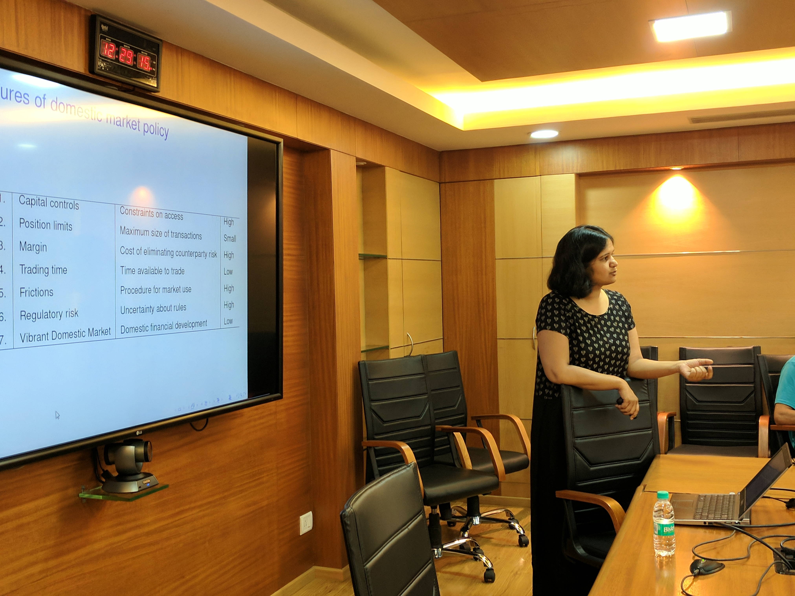
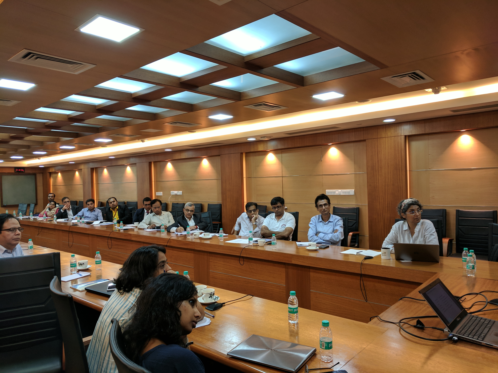
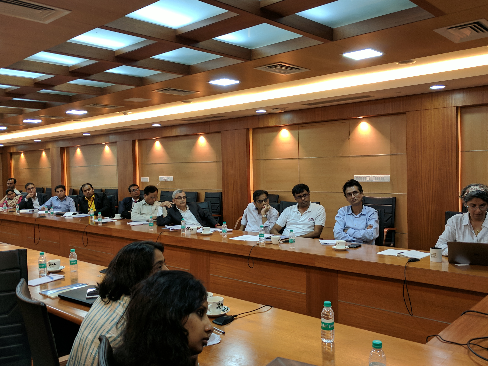
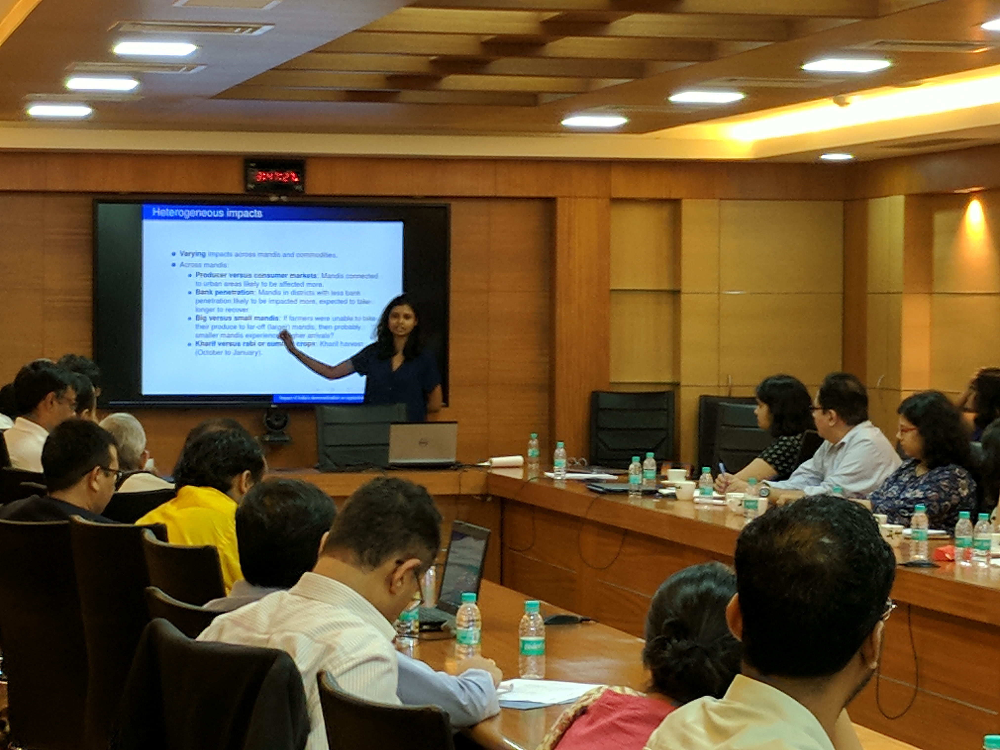
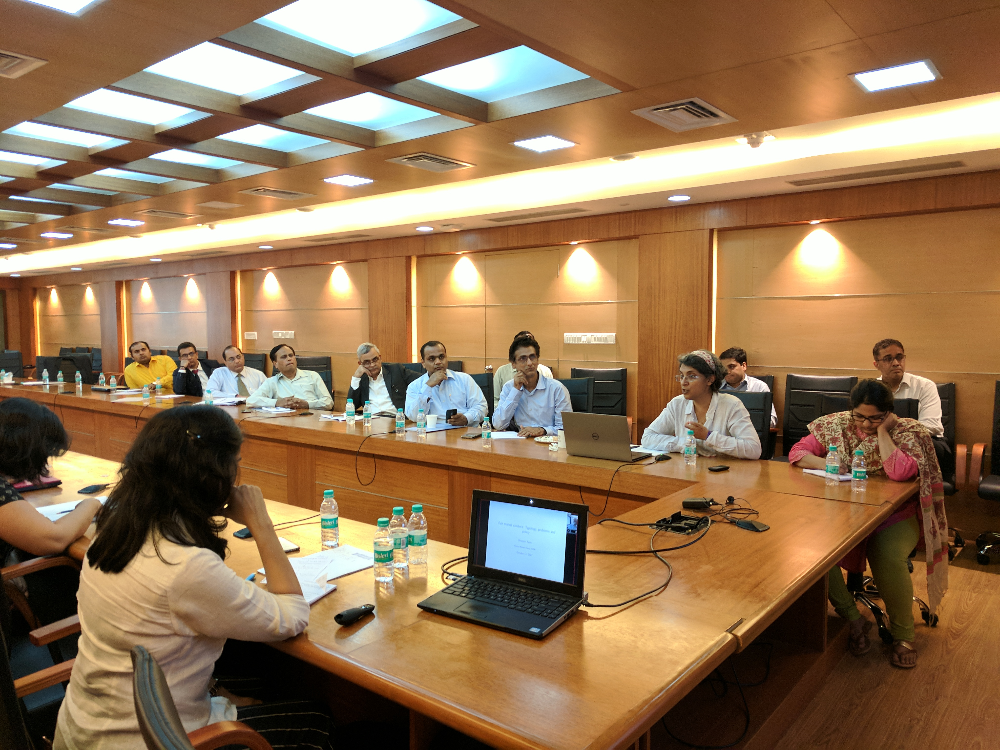
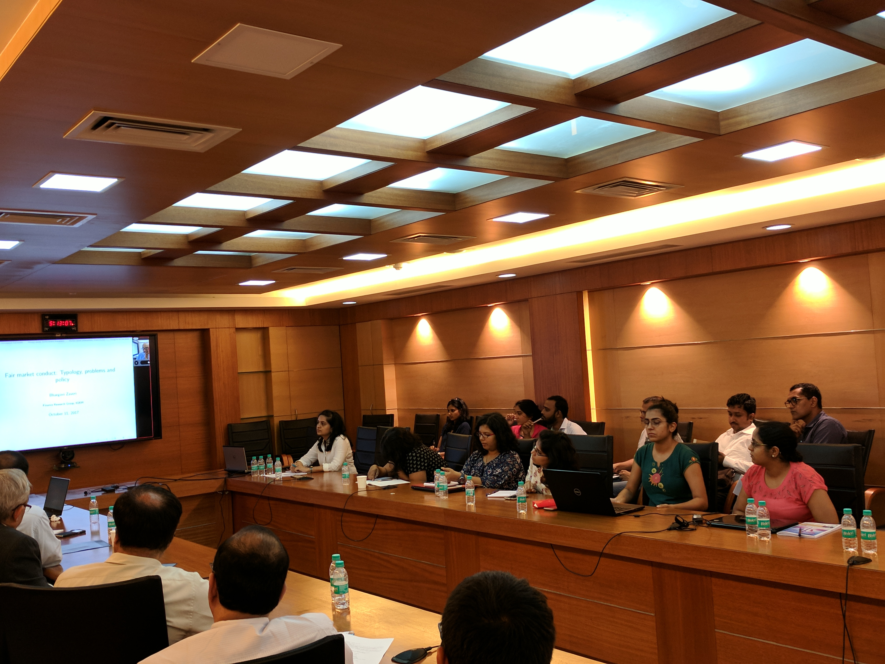

Field workshop on Financial markets research
11th October 2017
Seanza Conference Hall, Indira Gandhi Institute of Development Research, Mumbai
The field workshop on financial markets research aims to bring together experts in a field to discuss research ideas and policy relevant ques- tions, dedicating time for discussion and presentation. The audience includes academics, participants from the legal and financial industry, policy makers as well as regulators. The research papers will focus on the impact of regu- latory interventions like Securities Transactions Tax and the OTR fee, and distress in housing loans. As always, the workshop has discussions with a policy focus. In this workshop, we have panels that will discuss how currency markets policy should adjust when monetary policy focuses on inflation tar- geting, and defintions of fair market conduct, especially in the age of high frequency trading.
The agenda for the workshop is as follows:
| 09:30 - 09:55 | Registration, Coffee and Tea |
| 09:55 - 10:00 | Welcome address Susan Thomas, IGIDR |
| 10:00 - 11:00 | Impact of Securities Transactions Tax on Stock Markets and Market Participants:
Evidence From India[presentation]
Deepak Agrawal, Prasanna Tantri and Ramabhadran S Thirumalai, Indian School of Business and K R Subramanyam, University of Southern California Discussant: Renuka Sane, NIPFP |
| 11:00 - 12:00 | Do regulatory hurdles work on algorithmic trading?[presentation] Nidhi Aggarwal, IIM Udaipur, Venkatesh Panchapagesan, IIM Bangalore and Susan Thomas, IGIDR Discussant: Hemant Manuj, S. P. Jain Institute of Management and Research |
| 12:00 - 12:10 | Break |
| 12:10 - 13:30 | Panel: Currency market policy in a inflation targettingregime
[presentation] Presentation: Anjali Sharma, Finance Research Group Panelist: Venkatesh Panchapagesan, IIM Bangalore Bijoor Venkatesh, Almus risk consulting |
| 13:30 - 14:30 | Lunch |
| 14:30 - 15:30 | Is There Distress in Housing Loan Markets? Venkatesh Panchapagesan, IIM Bangalore Discussant: Harsh Vardhan, Bain Consulting |
| 15:30 - 16:30 | Impact of India's demonetisation on agricultural markets
[presentation] Nidhi Aggarwal, IIM Udaipur and Sudha Narayanan, IGIDR Discussant: Kaushik Krishnan, True North |
| 16:30 - 17:00 | Break |
| 17:00 - 18:15 | Panel: Understanding issues in fair market conduct
[presentation] Presentation: Bhargavi Zaveri, Finance Research Group Panelist: Raj Benahalkar, NCDEX Jayanth R. Varma, IIM Ahmedabad |
| 18:15 - 18:30 | Summing up Susan Thomas, IGIDR |






  |